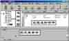

|
|
| 当前位置：电脑报电子版 > 1999 年 > 39 期 > 软件世界 > 一步一步学Partiton Magic |
| 《 一步一步学Partiton Magic 》 |
| Partition Magic是目前最好的硬盘管理和分区工具，该工具可以在不破坏硬盘中已有数据的前提下，任意划分硬盘分区，以及在一个硬盘中安装多个操作系统。现在让我们学习这个工具的几个常用用法。
一、启动程序 在目前最新版本401中，Partition Magic提供了在Windows环境和在DOS环境下运行的两个主程序文件。如果需要在Windows环境下启动Partition Magic，可首先运行磁盘扫描程序和磁盘碎片整理程序扫描和整理磁盘，然后重新启动系统，并在系统启动时忽略所有的启动配置，之后从系统开始菜单中运行相应的程序即可。此外，在Partition Magic安装时创建的应急盘中有一个在DOS环境下运行的程序，如果需要使用它，可在整理磁盘后，使用该应急盘启动系统，并在DOS提示符下运行程序的主文件“pqmagicexe”。对于这两个工具，界面风格和常规操作大致相同，只是Windows版的程序提供了额外的Wizard向导式操作方式，非常适合普通用户使用，在此我们着重介绍这种方式。除下面详细介绍的功能外，Partition Magic还提供了回收硬盘中的Free Space空间“Redistribute free space”、为硬盘分区操作提供建议“Analyze and recommend”、回收浪费的硬盘空间“Reclaim wasted space”、重定义硬盘中的坏扇区“Bad Sector Reset”、重定义硬盘的簇“Resize Clusters”、格式化硬盘分区“Format Partition”、检测硬盘分区错误“Check Partition”等等功能。最后我们要说明的是，Partition Magic使用起来是很安全的，你只要清楚地记住哪个分区中的数据不能删除，并在使用该工具前首先使用程序提供的“Create Rescue Diskette”功能创建一张应急盘，就可以放心大胆地干了。 贝贝提示：可以到https:∥orderpowerquestcom/retaildemos/partitionmagic/indexhtml下载该软件的Demo（试用演示版），另外也可以到各个软件网站下载老的共享版本。 二、创建硬盘分区 1启动程序，Partition Magic将自动扫描硬盘系统(如图1)，发现两个硬盘（Disk 1和Disk 2），Disk 1已经有了两个分区，盘符是“C:”和“E:”，Disk 2没有分区，盘符是“D:”。现在我们要在Disk 2盘中创建一个新的分区“F:”。单击界面下边“Wizard”功能列表区的第一个图标“Create new partition”，程序给出一个说明界面，提示用户将进行硬盘分区操作，注意，这项操作会导致系统的硬盘盘符排列发生变化。 2单击“Next”按钮切换到下一界面，在其中的系统硬盘驱动器列表框中选择需要创建分区的硬盘。如果你只有一个硬盘，就不用选择了。 3点击“Next”切换到下一界面，在其中选择需要创建硬盘的分区格式。程序默认使用FAT16。你也可以选择FAT32（Win98系统使用）、NTFS（Windows NT系统使用）。 4切换到下一界面，在其中输入新创建的分区容量的数字。程序给出了可以创建分区的最大和最小容量，你不能超越这个范围。 5切换到下一界面，在其中的“Label for new partition”文本框中设置新建分区的卷标。 6切换到下一界面（图2），在这个界面中程序给出了所有以上的设置信息，并以图示方式给出了分割后的硬盘分区排列。如果觉得没有问题，单击“Finish”按钮确定，回到程序主界面（如图1）。从主界面中可以看到，程序以图示方式给出了新建的分区排列和分区的盘符。在程序界面的右下角多了一个“Apply”按钮，单击该按钮，程序给出一个确认对话框“Apply changes now?”，单击“Yes”按钮确定，程序即开始分区创建操作，同时会给出操作进程的对话框。 7硬盘分区完成后，单击提示框中的“OK”按钮回到程序主界面。单击界面中的“Exit”按钮，程序给出“Warning”对话框，提示用户系统需要重新启动，使以上分割生效，单击“OK”按钮确定，系统重新启动，分区创建结束。 贝贝提示：在第二步所示界面中有一个“Advanced”按钮项，单击该按钮程序会给出分区设置界面，在其中提供了一些与硬盘分区相关的一些设置，其中重要的选项有： (a)“Allow wizard to move partition”：在分割硬盘时允许移动硬盘分区表。 (b)“Allow wizard to resize partition”：在分割硬盘时允许重新重定义分区大小。 (c)“Recommanded MinSize”：程序建议保留分区的最小取值。 三、调整分区大小 1在程序界面中选择需要改变大小的分区，然后单击界面按钮条中的“Resize/Move partition”按钮，或者是使用鼠标右键单击需要收缩的分区图标，从关联菜单中选择“Resize/Move”命令，程序都会给出如图3所示的设置界面。2选择界面中的“New Size”文本框设置该分区的新容量，此时剩余的空间将会转化为只有Partition Magic才能识别的Free Space空间，而且程序默认Free Space空间在当前分区的后面。 贝贝提示：对于扩大分区容量，硬盘中必须有Free Space空间紧挨着这个分区，如果中间隔着其他的分区，就不能将Free Space空间添加到这个分区中了。所以如果需要扩大的分区在需要减小的分区之前，创建的Free Space就必须在需要收缩的分区之前。 3单击“OK”按钮回到程序主界面，这时在界面中的硬盘分区列表框中多了一个“Free Space”项。选择需要扩大的分区，然后单击按钮条中的“Resize/Move partition”按钮，程序再次给出如图3所示的界面，在其中的“New Size”项中设置新的硬盘分区容量就可以了。 4单击程序主界面中的“Apply”按钮，程序开始进行改变分区的操作。 四、合并硬盘分区 1合并分区时，由于涉及到删除分区，所以只能保留一个硬盘分区中的数据无损，如果你需要两个分区中的全部数据，可以备份其中的一个分区数据，我们把这个分区叫做副分区。使用鼠标右键单击这个已经备份分区，并从关联菜单中选择“Delete”命令，程序给出删除分区对话框。2输入副分区的卷标，如果删除分区没有设置卷标，需要输入“NO NAME”。 3单击“OK”按钮确定，回到程序主界面，副分区删除结束。此时可以看到这个分区的空间已经变为Free Space空间了。 4选择需要合并的主分区，然后以按照扩大硬盘分区的操作方法进行操作就可以了。 五、转换分区格式 1使用鼠标右键单击需要转换分区格式的硬盘分区图标，并从关联菜单中的“Convert”子菜单中选择相应的转换命令，如“Convert FAT32 to FAT”。2程序弹出对话框，通知用户将进行分区格式转换操作，单击界面中的“OK”按钮确定，转换结束。 3回到程序主界面，按照第三部分第四步操作即可。 贝贝提示：程序转换硬盘的分区格式是不破坏数据的，而且可以任意转换，这对于安装多个操作系统带来很大方便。 六、复制硬盘分区 1首先使用程序提供的“Move/Resize Partition”改变分区大小的功能，在硬盘中创建足够容量的Free Space空间。2使用鼠标右键单击需要复制的硬盘分区，并从关联菜单中选择“Copy”命令，程序弹出设置界面。 3单击界面中的“OK”按钮确定，回到程序主界面。按照第三部分第四步操作即可。 七、安装多个操作系统 1单击程序界面中的“Prepare for new operating system”图标，激活该项功能。程序给出一个说明界面，单击“Next”按钮继续。2程序弹出“Select operating system”界面，在其中选择需要安装的操作系统。 3切换到下一界面，选择适合该操作系统的硬盘分区表类型。 4切换到下一界面，在该界面中程序给出了适合所选择的操作系统的分区容量建议值，你可以使用它，或者自己定义新的容量。 5切换到下一界面，在其中设置新的硬盘主分区卷标。然后切换到“To install your new operating system”界面，单击界面中的“Next”按钮，程序会在当前硬盘中创建一个主引导分区，不过此时这个分区具有隐含属性。 6使用鼠标右键单击当前活动的主引导分区，并从关联菜单中的“Advanced”项子菜单中选择“Hide Partition”命令，将其隐藏。之后使用鼠标右键单击创建的具有隐含属性的主引导分区，并从关联菜单中的“Advanced”项子菜单中选择“Unhide Partition”命令，将其激活。 7在软盘驱动器中插入启动盘，然后单击“Apply”命令来完成设置工作。之后退出程序，并重新引导系统启动，现在就可以安装新的操作系统了。 贝贝提示：在Partition Magic的安装路径下，有一个在DOS环境下运行的主引导分区切换程序“Pqbootexe”，当运行该工具时，程序会给出当前硬盘中所有的主引导分区列表，选择相应的序号即可快速使用该分区的操作系统引导机器启动，而当前的分区也会自动变为隐藏分区。 (特约撰稿人 张熙平) |
| 下载本期推荐软件 | 页 首 |
| 《电脑报》版权所有，电脑报网站编辑部设计制作发布 |